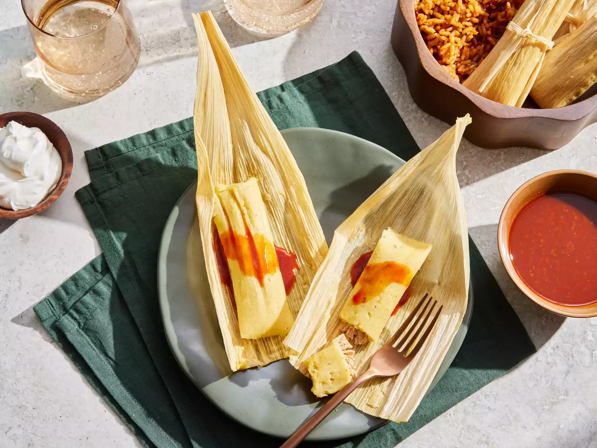

Tamales

Description
A tamale is a traditional Mesoamerican dish made of filled masa dough steamed in a corn husk. Masa is a maize dough made from ground nixtamalized corn.
Ingredients
- 1 ¼ pounds pork loin
- 1 large onion, halved
- 1 clove garlic
- 4 dried chile peppers
- 2 cups water
- 1 ½ teaspoons salt
- 1 (8 ounce) package dried corn husks
- ⅔ cup lard
- 1 (10.5 ounce) can beef broth, or as needed
- 2 cups masa harina
- 1 teaspoon baking powder
- ½ teaspoon salt
- 1 cup sour cream
Steps
- Cook the pork.
- Make the sauce.
- Mix the pork with ½ of the sauce.
- Soak the husks and make the dough.
- Spread the dough over the dried husks.
- Dollop the filling onto the dough.
- Fold the tamales.
- Steam the tamales.
- Remove the husks.
- Top with the sauce and sour cream (or mix them together for a creamy sauce).